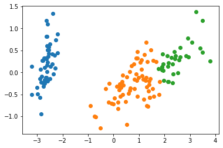

Implementasi K-Means Clustering (Tugas 5)
Contents
Implementasi K-Means Clustering (Tugas 5)#
Baca data bunga iris
Implementasi algoritma Naive Bayes Gaussian untuk menentukan probabilitas kelas dari data tes
Baca Data#
Baca data dengan library pandas italicized text
Data Bunga Iris
Hitungan Data Manual
Persiapan Lingkungan#
Impor train_test_split dari sklearn
Impor KNeighborsClassifier dari sklearn
Impor pandas library
import pandas as pd
import numpy as np
from numpy import unique
from numpy import where
from matplotlib import pyplot
from sklearn import preprocessing
from sklearn.cluster import KMeans
dataset_url = "https://gist.githubusercontent.com/netj/8836201/raw/6f9306ad21398ea43cba4f7d537619d0e07d5ae3/iris.csv"
df = pd.read_csv(dataset_url)
df.head()
| sepal.length | sepal.width | petal.length | petal.width | variety | |
|---|---|---|---|---|---|
| 0 | 5.1 | 3.5 | 1.4 | 0.2 | Setosa |
| 1 | 4.9 | 3.0 | 1.4 | 0.2 | Setosa |
| 2 | 4.7 | 3.2 | 1.3 | 0.2 | Setosa |
| 3 | 4.6 | 3.1 | 1.5 | 0.2 | Setosa |
| 4 | 5.0 | 3.6 | 1.4 | 0.2 | Setosa |
#check number of rows and columns in dataset
df.shape
(150, 5)
Hitung Data#
Pisahkan feature “variety” dari dataframe
Tentukan nilai K atau centroid
Hitung jarak data terhadap centroid
Hitung rata-rata data per-cluster
# delete 'variety' column
df_without_label = df.drop(columns=["variety"])
df_without_label
| sepal.length | sepal.width | petal.length | petal.width | |
|---|---|---|---|---|
| 0 | 5.1 | 3.5 | 1.4 | 0.2 |
| 1 | 4.9 | 3.0 | 1.4 | 0.2 |
| 2 | 4.7 | 3.2 | 1.3 | 0.2 |
| 3 | 4.6 | 3.1 | 1.5 | 0.2 |
| 4 | 5.0 | 3.6 | 1.4 | 0.2 |
| ... | ... | ... | ... | ... |
| 145 | 6.7 | 3.0 | 5.2 | 2.3 |
| 146 | 6.3 | 2.5 | 5.0 | 1.9 |
| 147 | 6.5 | 3.0 | 5.2 | 2.0 |
| 148 | 6.2 | 3.4 | 5.4 | 2.3 |
| 149 | 5.9 | 3.0 | 5.1 | 1.8 |
150 rows × 4 columns
# separate target
# values
X=df.iloc[:,0:4].values
#
y = df.values[:,4]
le = preprocessing.LabelEncoder()
labels = le.fit_transform(y)
labels
array([0, 0, 0, 0, 0, 0, 0, 0, 0, 0, 0, 0, 0, 0, 0, 0, 0, 0, 0, 0, 0, 0,
0, 0, 0, 0, 0, 0, 0, 0, 0, 0, 0, 0, 0, 0, 0, 0, 0, 0, 0, 0, 0, 0,
0, 0, 0, 0, 0, 0, 1, 1, 1, 1, 1, 1, 1, 1, 1, 1, 1, 1, 1, 1, 1, 1,
1, 1, 1, 1, 1, 1, 1, 1, 1, 1, 1, 1, 1, 1, 1, 1, 1, 1, 1, 1, 1, 1,
1, 1, 1, 1, 1, 1, 1, 1, 1, 1, 1, 1, 2, 2, 2, 2, 2, 2, 2, 2, 2, 2,
2, 2, 2, 2, 2, 2, 2, 2, 2, 2, 2, 2, 2, 2, 2, 2, 2, 2, 2, 2, 2, 2,
2, 2, 2, 2, 2, 2, 2, 2, 2, 2, 2, 2, 2, 2, 2, 2, 2, 2])
# data_tes = np.array(labels)
kmeans = KMeans(n_clusters=3, n_init=1, max_iter=1)
kmeans.fit(X)
# kmeans.labels_
labels = kmeans.predict(X)
centroids = kmeans.cluster_centers_
centroids
array([[5.94761905, 2.75873016, 4.44126984, 1.42857143],
[5.00784314, 3.40980392, 1.49215686, 0.2627451 ],
[6.84444444, 3.08055556, 5.77222222, 2.125 ]])
df = pd.DataFrame(labels, columns=["Label"])
df
| Label | |
|---|---|
| 0 | 1 |
| 1 | 1 |
| 2 | 1 |
| 3 | 1 |
| 4 | 1 |
| ... | ... |
| 145 | 2 |
| 146 | 0 |
| 147 | 2 |
| 148 | 2 |
| 149 | 0 |
150 rows × 1 columns
from sklearn.decomposition import PCA
pca = PCA()
# pca = PCA(n_components=2)
X_new = pca.fit_transform(X)
X_new
array([[-2.68412563e+00, 3.19397247e-01, -2.79148276e-02,
-2.26243707e-03],
[-2.71414169e+00, -1.77001225e-01, -2.10464272e-01,
-9.90265503e-02],
[-2.88899057e+00, -1.44949426e-01, 1.79002563e-02,
-1.99683897e-02],
[-2.74534286e+00, -3.18298979e-01, 3.15593736e-02,
7.55758166e-02],
[-2.72871654e+00, 3.26754513e-01, 9.00792406e-02,
6.12585926e-02],
[-2.28085963e+00, 7.41330449e-01, 1.68677658e-01,
2.42008576e-02],
[-2.82053775e+00, -8.94613845e-02, 2.57892158e-01,
4.81431065e-02],
[-2.62614497e+00, 1.63384960e-01, -2.18793179e-02,
4.52978706e-02],
[-2.88638273e+00, -5.78311754e-01, 2.07595703e-02,
2.67447358e-02],
[-2.67275580e+00, -1.13774246e-01, -1.97632725e-01,
5.62954013e-02],
[-2.50694709e+00, 6.45068899e-01, -7.53180094e-02,
1.50199245e-02],
[-2.61275523e+00, 1.47299392e-02, 1.02150260e-01,
1.56379208e-01],
[-2.78610927e+00, -2.35112000e-01, -2.06844430e-01,
7.88791149e-03],
[-3.22380374e+00, -5.11394587e-01, 6.12996725e-02,
2.16798118e-02],
[-2.64475039e+00, 1.17876464e+00, -1.51627524e-01,
-1.59209718e-01],
[-2.38603903e+00, 1.33806233e+00, 2.77776903e-01,
-6.55154587e-03],
[-2.62352788e+00, 8.10679514e-01, 1.38183228e-01,
-1.67734737e-01],
[-2.64829671e+00, 3.11849145e-01, 2.66683156e-02,
-7.76281796e-02],
[-2.19982032e+00, 8.72839039e-01, -1.20305523e-01,
-2.70518681e-02],
[-2.58798640e+00, 5.13560309e-01, 2.13665172e-01,
6.62726502e-02],
[-2.31025622e+00, 3.91345936e-01, -2.39444043e-01,
1.50707908e-02],
[-2.54370523e+00, 4.32996063e-01, 2.08457232e-01,
-4.10654027e-02],
[-3.21593942e+00, 1.33468070e-01, 2.92396751e-01,
-4.48212505e-03],
[-2.30273318e+00, 9.87088548e-02, 3.91232587e-02,
-1.48352589e-01],
[-2.35575405e+00, -3.72818597e-02, 1.25021083e-01,
3.00330904e-01],
[-2.50666891e+00, -1.46016880e-01, -2.53420042e-01,
-3.46074722e-02],
[-2.46882007e+00, 1.30951489e-01, 9.49105761e-02,
-5.74497158e-02],
[-2.56231991e+00, 3.67718857e-01, -7.84942051e-02,
1.41727423e-02],
[-2.63953472e+00, 3.12039980e-01, -1.45908896e-01,
-6.57834667e-02],
[-2.63198939e+00, -1.96961225e-01, 4.07710791e-02,
1.23983306e-01],
[-2.58739848e+00, -2.04318491e-01, -7.72229891e-02,
6.04622767e-02],
[-2.40993250e+00, 4.10924264e-01, -1.45524972e-01,
-2.31628492e-01],
[-2.64886233e+00, 8.13363820e-01, 2.25669150e-01,
2.81372347e-01],
[-2.59873675e+00, 1.09314576e+00, 1.57810813e-01,
9.53488583e-02],
[-2.63692688e+00, -1.21322348e-01, -1.43049582e-01,
-1.90703413e-02],
[-2.86624165e+00, 6.93644716e-02, -1.64332307e-01,
-1.62598446e-01],
[-2.62523805e+00, 5.99370021e-01, -2.68350376e-01,
-1.76441213e-01],
[-2.80068412e+00, 2.68643738e-01, 9.36990825e-02,
1.68173054e-01],
[-2.98050204e+00, -4.87958344e-01, 7.29270457e-02,
1.07331474e-02],
[-2.59000631e+00, 2.29043837e-01, -8.00823030e-02,
1.37491513e-02],
[-2.77010243e+00, 2.63527534e-01, 7.72476932e-02,
-9.40633590e-02],
[-2.84936871e+00, -9.40960574e-01, -3.49230377e-01,
-3.19987487e-01],
[-2.99740655e+00, -3.41926057e-01, 1.92509212e-01,
7.46777682e-02],
[-2.40561449e+00, 1.88871429e-01, 2.63867946e-01,
-1.76208890e-01],
[-2.20948924e+00, 4.36663142e-01, 2.98742746e-01,
1.82842502e-01],
[-2.71445143e+00, -2.50208204e-01, -9.76781440e-02,
-1.42843574e-01],
[-2.53814826e+00, 5.03771144e-01, 1.66705637e-01,
1.89622291e-01],
[-2.83946217e+00, -2.27945569e-01, 8.37268490e-02,
5.95642283e-02],
[-2.54308575e+00, 5.79410022e-01, -1.71150242e-02,
4.65686438e-02],
[-2.70335978e+00, 1.07706082e-01, -8.92940085e-02,
-3.46583385e-02],
[ 1.28482569e+00, 6.85160470e-01, -4.06568025e-01,
-1.85252879e-02],
[ 9.32488532e-01, 3.18333638e-01, -1.80141866e-02,
-5.66512106e-04],
[ 1.46430232e+00, 5.04262815e-01, -3.38325765e-01,
1.65317587e-03],
[ 1.83317720e-01, -8.27959012e-01, -1.79591392e-01,
-9.35668402e-02],
[ 1.08810326e+00, 7.45906752e-02, -3.07757896e-01,
-1.12020574e-01],
[ 6.41669084e-01, -4.18246872e-01, 4.10760908e-02,
2.43116767e-01],
[ 1.09506066e+00, 2.83468270e-01, 1.69810240e-01,
8.35565724e-02],
[-7.49122670e-01, -1.00489096e+00, 1.23029192e-02,
1.79077226e-02],
[ 1.04413183e+00, 2.28361900e-01, -4.15336085e-01,
3.91345020e-02],
[-8.74540408e-03, -7.23081905e-01, 2.81141431e-01,
5.61891788e-03],
[-5.07840884e-01, -1.26597119e+00, -2.69817183e-01,
-4.55624408e-02],
[ 5.11698557e-01, -1.03981235e-01, 1.30547750e-01,
-5.07192325e-02],
[ 2.64976508e-01, -5.50036464e-01, -6.94146830e-01,
-5.71855195e-02],
[ 9.84934510e-01, -1.24817854e-01, -6.21144083e-02,
1.69496255e-01],
[-1.73925372e-01, -2.54854209e-01, 9.04576907e-02,
-1.25217292e-01],
[ 9.27860781e-01, 4.67179494e-01, -3.14620976e-01,
-9.98031365e-02],
[ 6.60283762e-01, -3.52969666e-01, 3.28027528e-01,
1.87878621e-01],
[ 2.36104993e-01, -3.33610767e-01, -2.71161837e-01,
2.13757370e-01],
[ 9.44733728e-01, -5.43145551e-01, -4.99519046e-01,
-2.57192177e-01],
[ 4.52269763e-02, -5.83834377e-01, -2.35002105e-01,
4.15766476e-02],
[ 1.11628318e+00, -8.46168522e-02, 4.59620991e-01,
7.50315529e-02],
[ 3.57888418e-01, -6.89250317e-02, -2.29853888e-01,
-1.22997604e-01],
[ 1.29818388e+00, -3.27787308e-01, -3.47854352e-01,
-8.88370584e-04],
[ 9.21728922e-01, -1.82737794e-01, -2.31071778e-01,
2.88255429e-01],
[ 7.14853326e-01, 1.49055944e-01, -3.21800937e-01,
-4.17197556e-02],
[ 9.00174373e-01, 3.28504474e-01, -3.16209074e-01,
-1.00226728e-01],
[ 1.33202444e+00, 2.44440876e-01, -5.21702780e-01,
-3.53331921e-02],
[ 1.55780216e+00, 2.67495447e-01, -1.64920984e-01,
-6.99692823e-02],
[ 8.13290650e-01, -1.63350301e-01, 3.54245048e-02,
2.97114340e-02],
[-3.05583778e-01, -3.68262190e-01, -3.18491581e-01,
-7.45696136e-02],
[-6.81264921e-02, -7.05172132e-01, -2.44213810e-01,
-6.83084222e-03],
[-1.89622472e-01, -6.80286764e-01, -3.06420561e-01,
2.05510016e-02],
[ 1.36428712e-01, -3.14032438e-01, -1.77242766e-01,
-3.29419128e-02],
[ 1.38002644e+00, -4.20954287e-01, 1.61671275e-02,
1.78304463e-01],
[ 5.88006443e-01, -4.84287420e-01, 4.44433499e-01,
2.50976060e-01],
[ 8.06858313e-01, 1.94182315e-01, 3.88963063e-01,
1.14207243e-01],
[ 1.22069088e+00, 4.07619594e-01, -2.37167010e-01,
-3.12171829e-02],
[ 8.15095236e-01, -3.72037060e-01, -6.14720843e-01,
-1.54021000e-01],
[ 2.45957680e-01, -2.68524397e-01, 1.88366812e-01,
1.46674512e-01],
[ 1.66413217e-01, -6.81926725e-01, -6.00092259e-02,
-2.96222195e-02],
[ 4.64800288e-01, -6.70711545e-01, -2.43068557e-02,
2.69651428e-01],
[ 8.90815198e-01, -3.44644444e-02, -9.94693289e-03,
1.53484666e-01],
[ 2.30548024e-01, -4.04385848e-01, -2.29410241e-01,
-1.69303245e-02],
[-7.04531759e-01, -1.01224823e+00, -1.05691149e-01,
-4.56133071e-02],
[ 3.56981495e-01, -5.04910093e-01, 1.66171702e-02,
9.87414793e-02],
[ 3.31934480e-01, -2.12654684e-01, 8.32042909e-02,
2.38475434e-01],
[ 3.76215651e-01, -2.93218929e-01, 7.79963511e-02,
1.31137381e-01],
[ 6.42576008e-01, 1.77381901e-02, -2.05394967e-01,
2.13776830e-02],
[-9.06469865e-01, -7.56093367e-01, -1.25996476e-02,
-2.32534844e-01],
[ 2.99000842e-01, -3.48897806e-01, 1.05816605e-02,
5.11811717e-02],
[ 2.53119273e+00, -9.84910950e-03, 7.60165427e-01,
2.90555728e-02],
[ 1.41523588e+00, -5.74916348e-01, 2.96322527e-01,
1.53046739e-02],
[ 2.61667602e+00, 3.43903151e-01, -1.10787883e-01,
-6.57720412e-02],
[ 1.97153105e+00, -1.79727904e-01, 1.08424662e-01,
2.36790934e-01],
[ 2.35000592e+00, -4.02609471e-02, 2.85389563e-01,
1.70633278e-04],
[ 3.39703874e+00, 5.50836673e-01, -3.48437556e-01,
1.12371653e-01],
[ 5.21232244e-01, -1.19275873e+00, 5.45659296e-01,
9.81266196e-02],
[ 2.93258707e+00, 3.55500003e-01, -4.20239936e-01,
2.57191032e-01],
[ 2.32122882e+00, -2.43831502e-01, -3.48304395e-01,
7.86746130e-02],
[ 2.91675097e+00, 7.82791949e-01, 4.23335418e-01,
-1.10982071e-01],
[ 1.66177415e+00, 2.42228408e-01, 2.42440190e-01,
-1.21040552e-01],
[ 1.80340195e+00, -2.15637617e-01, -3.76481682e-02,
-7.80198444e-02],
[ 2.16559180e+00, 2.16275585e-01, 3.33266418e-02,
-1.63061478e-01],
[ 1.34616358e+00, -7.76818347e-01, 2.81902882e-01,
-1.40440869e-01],
[ 1.58592822e+00, -5.39640714e-01, 6.29029326e-01,
-3.29551728e-01],
[ 1.90445637e+00, 1.19250692e-01, 4.79639820e-01,
-2.19621263e-01],
[ 1.94968906e+00, 4.19432597e-02, 4.41861676e-02,
1.57681907e-01],
[ 3.48705536e+00, 1.17573933e+00, 1.33894874e-01,
3.09219573e-01],
[ 3.79564542e+00, 2.57322973e-01, -5.13767764e-01,
-5.38460965e-02],
[ 1.30079171e+00, -7.61149636e-01, -3.44995038e-01,
4.58247549e-02],
[ 2.42781791e+00, 3.78196013e-01, 2.19119324e-01,
-1.85429264e-01],
[ 1.19900111e+00, -6.06091528e-01, 5.11855509e-01,
-6.09591171e-02],
[ 3.49992004e+00, 4.60674099e-01, -5.73182243e-01,
1.40227954e-01],
[ 1.38876613e+00, -2.04399327e-01, -6.45227566e-02,
-1.63040977e-01],
[ 2.27543050e+00, 3.34990606e-01, 2.86150091e-01,
6.03719696e-02],
[ 2.61409047e+00, 5.60901355e-01, -2.05534524e-01,
2.40704986e-01],
[ 1.25850816e+00, -1.79704795e-01, 4.58477039e-02,
-1.47503846e-01],
[ 1.29113206e+00, -1.16668651e-01, 2.31256463e-01,
-4.02660775e-03],
[ 2.12360872e+00, -2.09729477e-01, 1.54180024e-01,
-5.28273230e-02],
[ 2.38800302e+00, 4.64639805e-01, -4.49530192e-01,
2.31524053e-01],
[ 2.84167278e+00, 3.75269167e-01, -4.98898076e-01,
2.23364626e-02],
[ 3.23067366e+00, 1.37416509e+00, -1.14548205e-01,
2.52901923e-01],
[ 2.15943764e+00, -2.17277579e-01, 2.08763167e-01,
-1.28193066e-01],
[ 1.44416124e+00, -1.43413410e-01, -1.53233888e-01,
1.90996358e-01],
[ 1.78129481e+00, -4.99901681e-01, -1.72875189e-01,
5.05434412e-01],
[ 3.07649993e+00, 6.88085678e-01, -3.35592292e-01,
-3.09828045e-01],
[ 2.14424331e+00, 1.40064201e-01, 7.34878937e-01,
-5.55419691e-02],
[ 1.90509815e+00, 4.93005260e-02, 1.62180236e-01,
2.21202937e-01],
[ 1.16932634e+00, -1.64990262e-01, 2.81835840e-01,
-2.04617872e-02],
[ 2.10761114e+00, 3.72287872e-01, 2.72911321e-02,
-2.10621786e-01],
[ 2.31415471e+00, 1.83651279e-01, 3.22693747e-01,
-2.77653777e-01],
[ 1.92226780e+00, 4.09203467e-01, 1.13586596e-01,
-5.05304967e-01],
[ 1.41523588e+00, -5.74916348e-01, 2.96322527e-01,
1.53046739e-02],
[ 2.56301338e+00, 2.77862603e-01, 2.92569525e-01,
-5.79127477e-02],
[ 2.41874618e+00, 3.04798198e-01, 5.04482664e-01,
-2.41091000e-01],
[ 1.94410979e+00, 1.87532303e-01, 1.77825091e-01,
-4.26195940e-01],
[ 1.52716661e+00, -3.75316983e-01, -1.21898172e-01,
-2.54367442e-01],
[ 1.76434572e+00, 7.88588545e-02, 1.30481631e-01,
-1.37001274e-01],
[ 1.90094161e+00, 1.16627959e-01, 7.23251563e-01,
-4.45953047e-02],
[ 1.39018886e+00, -2.82660938e-01, 3.62909648e-01,
1.55038628e-01]])
# retrieve unique clusters
clusters = unique(labels)
# fit the model
kmeans.fit(X)
# assign a cluster to each example
yhat = kmeans.predict(X)
# create scatter plot for samples from each cluster
for cluster in clusters:
# get row indexes for samples with this cluster
row_ix = where(yhat == cluster)
# create scatter of these samples
pyplot.scatter(X_new[row_ix, 0], X_new[row_ix, 1])
# show the plot
pyplot.show()
